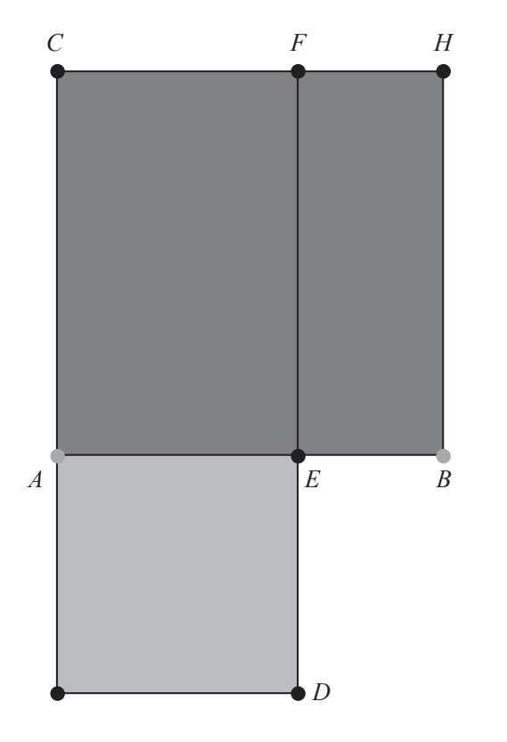
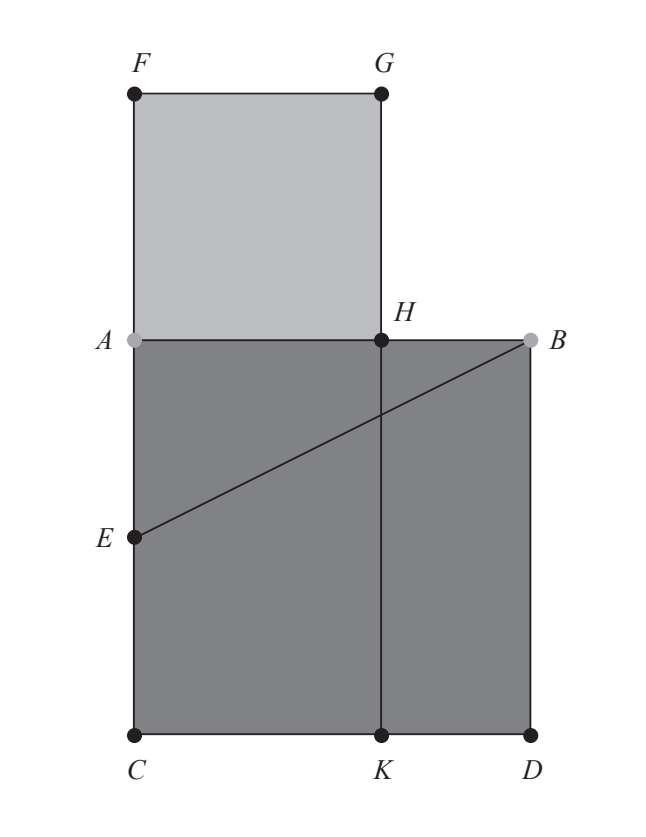

欧几里得所著的《几何原本》卷六中包含了欧多克索斯的命题理论和平面几何的理论。欧几里得在书中提到了相似三角形定理以及第三比例项、第四比例项还有比例中项。这是黄金比例第一次在数学领域出现。卷六的第三个定义，即中外比的定义，以最经典的表达解释了“中外比”，而且在第三十个命题中，欧几里得就该定义给出了应用实例。
卷六
定义
当一条线段分成两段，整条线段与较长线段的比等于较长线段与较短线段的比，我们称这条线段按中外比分割。
命题
命题30、按中外比分一条已知线段。
设该已知线段为AB。
要求线段AB按中外比分割。
在线段AB上作正方形BC，并且在AC及其延长线上作平行四边形CD，让其总“面积”等于BC，图形AD与BC相似。
现在BC是正方形，因此AD也是正方形。因为正方形BC的面积等于平行四边形CD，把平行四边形CE从两个图形中除去，那么剩下的平行四边形BF与AD面积相等。但是它们的各角相等，因此BF、AD构成夹角的边互成反比，FE比ED等于AE比EB。但FE等于AB，ED等于AE。因此，AB比AE等于AE比EB。又因为AB大于AE，所以AE也大于EB。

这样，点E按中外比分线段AB，AE为较长线段。
虽然卷六中最出名的就是讨论了黄金比例，但欧几里得在卷二的第十一个命题中已经展示了黄金比例，该命题试图用几何学的方法求解方程a（a-x）=x2。这个命题基本上与卷六的第三十个命题相同，唯一的不同是术语的使用。我们可以说在卷二的第十一个命题中首次出现了黄金比例，但作者似乎希望把这些问题留到后面。因此，欧几里得把它们藏在了一个矩形的问题中。无论如何，欧几里得还是证明了任何与线段比例有关的问题都可以转化为矩形的面积问题。
卷二
命题11、分一条已知线段，让该线段与其中一条小线段构成的矩形面积等于另一条小线段构成的正方形的面积。
设AB为已知线段。
要求将AB分为两段，让AB与其中一条小线段构成的矩形的面积等于另一条小线段构成的正方形的面积。
作边长为AB的正方形ABDC，让E点平分AC并与B点相连为BE。延长CA到F，让EF等于BE。作边长为AF的正方形FH，延长GH到K。

因为线段AC已经被E点平分并且增加了线段FA，所以CF、FA构成的矩形的面积与AE构成的正方形面积相加等于EF构成的正方形面积。但是EF等于EB，因此，CF、FA构成的矩形与AE构成的正方形相加等于EB构成的正方形。但由于点A上的角是直角，所以BA、AE构成的正方形相加等于EB构成的正方形。因此，CF、FA构成的矩形与AE构成的正方形相加等于BA构成的正方形与AE构成的正方形相加。从上面的等式中分别减去AE构成的正方形，剩下CF、FA构成的矩形面积等于AB构成的正方形面积。因为AF等于FG，所以CF、FA构成的矩形为FK。而AB构成的正方形为AD，所以FK的面积等于AD。从上面的两个图形中各除去AK，那么剩下的正方形FH等于HD的面积。因为AB等于BD，所以HD是AB、BH构成的矩形，但FH是AH构成的正方形，因此由AB、BH构成的矩形等于HA构成的正方形。
这样，点H分线段AB，因此由AB、BH构成的矩形面积等于HA构成的正方形面积。